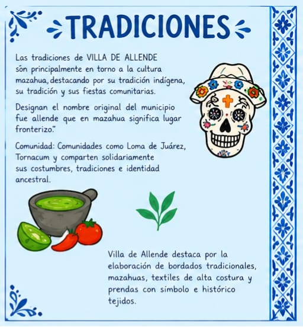

Actividades realizadas en Villa De Allende
Villa de Allende forma parte de la región mazahua, cuyas familias conservan técnicas textiles transmitidas de generación en generación.


Técnicas presentes en el municipio
- Textiles tejidos en telar de cintura.
- Tintes naturales obtenidos de plantas de la región.
- Bordados mazahuas con figuras geométricas y florales.
Fiestas y celebraciones
A lo largo del año se realizan ferias y celebraciones que reúnen a la comunidad y a visitantes de otros municipios.
Principales celebraciones
- Feria tradicional de la barbacoa.
- Fiestas patronales de las comunidades del municipio.
- Festivales culturales con danza y música regional.